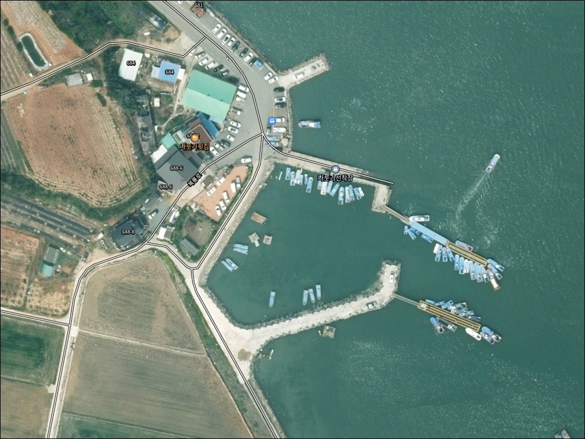
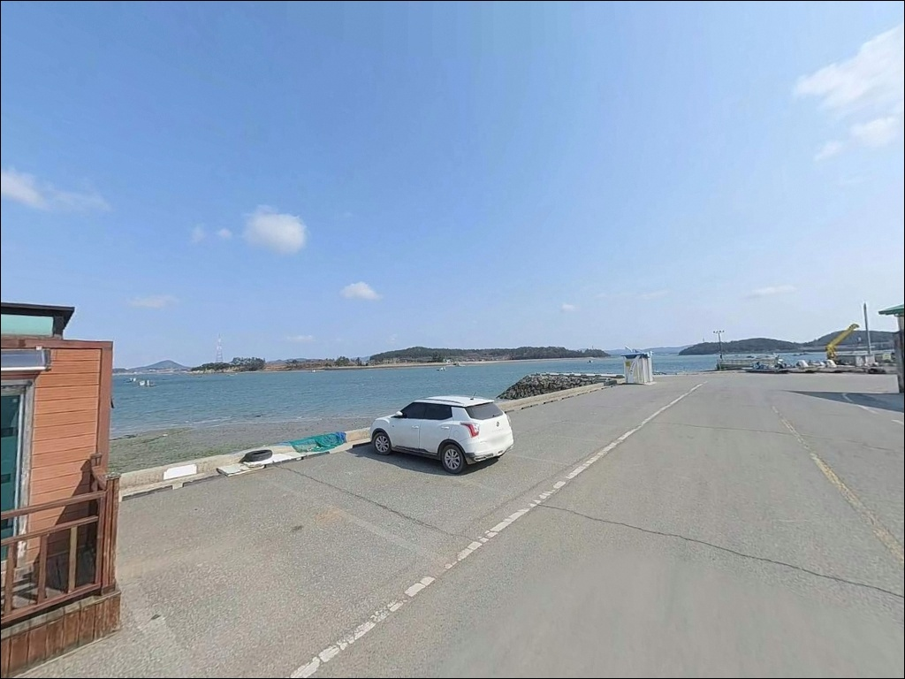
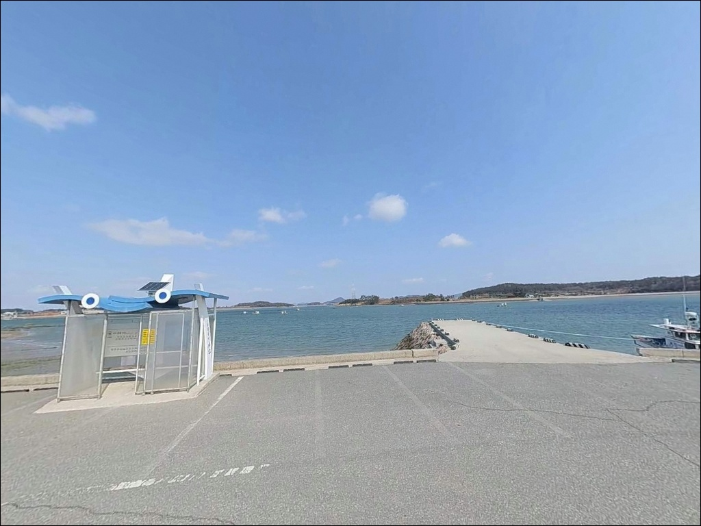
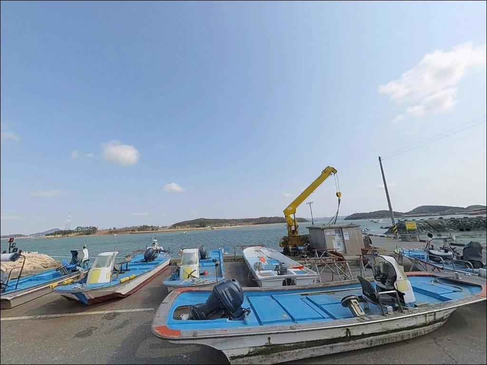
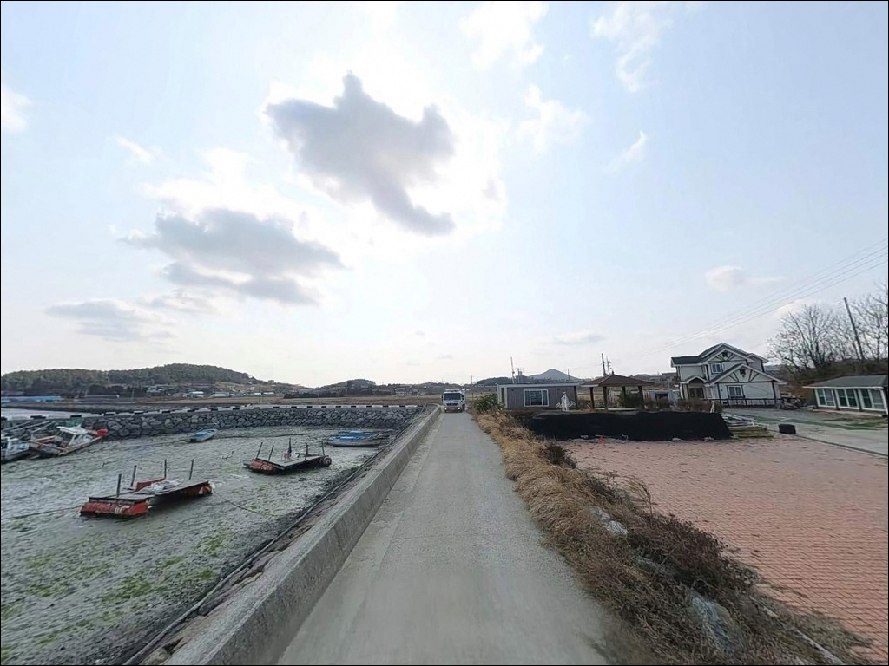
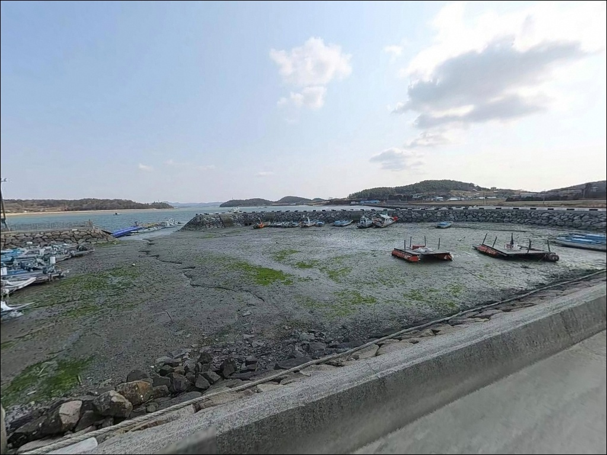
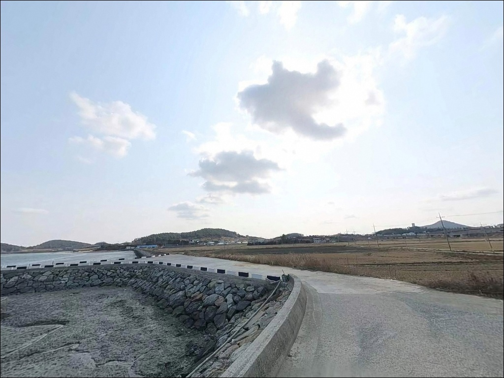
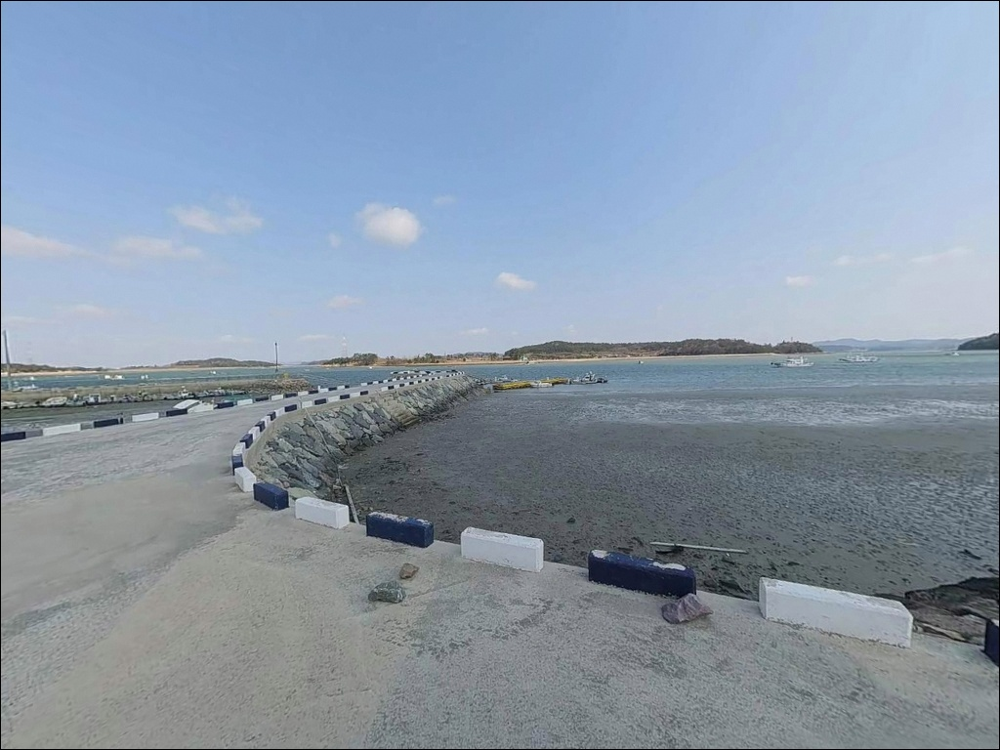
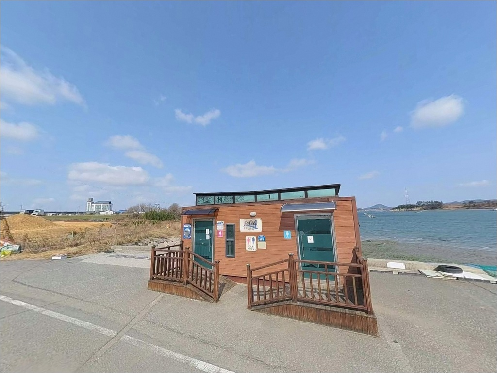

나룻가선착장, 전남 신안군 노을빛이 스며드는 차박, 낚시 겸용 감성 장소
이 페이지에는 광고(제휴 링크 포함)가 있으며, 광고 링크를 통해 구매하면 운영자가 판매 수익 또는 수수료를 받을 수 있습니다. 포인트 사진: 카카오맵 스카이뷰·로드뷰. 이 페이지의 지도·사진 이미지는 카카오맵의 실제 서비스 이미지와 다를 수 있습니다.


포인트 안내
나룻가선착장
전남 신안군 압해읍 복룡리 144-26
물때 확인 없이 신안 내만형 선착장에 도착하면
간조 시간대 갯벌이 드러난 채로
채비를 던질 수면 자체가 사라집니다.
나룻가선착장은 갯벌이 넓게 발달한
서해 내만 구조 포인트로,
만조 전후 타이밍이 낚시 성패를 가르는
핵심 변수입니다.
전남 신안군 압해읍 복룡리에 위치한
나룻가선착장은 압해도 동쪽 해안,
김대중대교 인근의 소형 마을 포구입니다.
ㄷ자 형태의 선착장 구조로
복룡리 앞바다 물목을 품고 있으며,
농어와 숭어가 지나는 길목으로
알려진 생활형 연안 포인트입니다.
이 글은
나룻가선착장의 진입 동선, 차박 여건,
물때 기반 낚시 타이밍, 낚시 스타일별 공략 조건에 집중합니다.
조황 단정이나 특정 어종 보장은
이 글의 범위에 포함되지 않습니다.

1. 좁은 마을도로 진입과 갓길 주차 구조
나룻가선착장은 압해도 내부 마을도로를 따라
복룡리 깊숙이 들어가는 방식으로 진입합니다.
도로 폭이 넓지 않은 농어촌 도로 수준이어서
대형 SUV나 캠핑 장비를 갖춘 차량이라면
출발 전 위성지도로 진입로를 먼저 확인하는
것이 기본 조건입니다.
주차는 선착장 인근 갓길을 활용하는 방식이
일반적입니다.
갓길 주차로 10대 안팎의 차량 수용이
가능한 구조이며,
어선 이동 동선과 겹치지 않는 자리를
먼저 파악하고 주차하는 편이 좋습니다.
ㄷ자 선착장 구조상 회차 공간이
일정 수준 확보되는 편이지만,
어선 작업 시간대에는 선착장 안쪽
이동 공간이 좁아질 수 있습니다.
소형~중형 차량을 기준으로 적합한 포인트이며,
차량이 클수록 사전 진입로 확인이 중요합니다.

2. 차박 환경 평가와 야간 체류 여건
나룻가선착장은 인근에 횟집과 좌대낚시터가
자리한 마을 포구입니다.
민가 밀집도가 낮은 편이어서
야간 체류 시 프라이버시는
상대적으로 유지되는 환경이지만,
마을과 인접한 구조인 만큼 소음 자제는
기본 매너입니다.
가로등 시설은 선착장 기본 조명 수준으로
제한적일 가능성이 있어
야간 낚시 시 개인 헤드랜턴은 필수입니다.
서해 내만 구조 특성상 파도 영향은 적은 편이지만,
편서풍 계절에는 바람이 세지는 경우가 있어
기상 예보를 당일 아침에 다시 확인하는
습관이 필요합니다.
차박을 주목적으로 삼기보다는
낚시 후 당일 귀가 또는 짧은 체류 형태가
이 포인트와 잘 맞는 방문 방식입니다.
편의시설이 현장에 없는 구조이므로
식수와 필요 물품은 반드시 출발 전에 완비해야 합니다.


3. 주변 편의시설 및 인프라 현황
나룻가선착장 인근에는
나룻가횟집이 선착장과 가까운 위치에 자리합니다.
그 외 편의점이나 마트는
반경 3km 이내에 확인된 정보가 없어
완전 자급 체제로 진입하는 것이
현실적인 준비 방식입니다.
반경 3km 내에는 글램핑 전용 시설인
아름다운글램핑장이 위치합니다.
공식 야영 시설이 필요한 경우
이쪽을 기점으로 삼고 선착장을 탐색하는
동선도 하나의 방법입니다.
압해읍 학교리 일대는 선착장에서
차량 10~15분 거리에 위치하며
음식점과 기타 생활 인프라를 이용할 수 있습니다.
출조 전 연료와 식품을 미리 채워두면
현장에서의 동선이 단순해집니다.

4. 방문 전 반드시 챙겨야 할 준비사항
나룻가선착장 방문에서 가장 먼저 확인할 것은
물때입니다.
갯벌이 발달한 내만 구조 특성상
간조 시간대에는 수심이 거의 사라지므로
만조 전후 2~3시간을 중심으로
출발 시각을 계산하는 것이 기본 전략입니다.
바다타임에서 압해읍 복룡리 기준 물때를
반드시 확인하고 이동하시기 바랍니다.
갯벌 바닥 특성상 채비 손실이
예상보다 잦을 수 있으므로
여분 채비를 넉넉하게 준비하는 편이 좋습니다.
ㄷ자 선착장 구조의 호안 및 콘크리트 벽면 주변은
걸림 지점이 될 수 있어
투척 방향과 각도를 미리 파악하는 것이
채비 손실을 줄이는 방법입니다.
어선 이동 시간대에는 선착장 안쪽
작업 공간이 좁아질 수 있어
어선 계류 구간과 어구는 반드시 피해 자리를 잡습니다.
야간 방문 시 헤드랜턴과 구명조끼는
필수 장비입니다.

5. 지형 기반 낚시 여건 분석
나룻가선착장의 핵심은 복룡리 앞바다
물목 구간입니다.
ㄷ자 형태의 선착장 구조는 창·낙조 시
조류 흐름을 꺾음 지점에서 집중시키는 구조로,
선착장 끝단 꺾임 구간이 조류가 모이는 자리입니다.
이 구간은 어종이 지나는 길목 역할을 합니다.
갯벌과 모래 혼합 바닥으로 이루어진
내만 구조이어서 수심은 전반적으로 얕은 편이며,
만조 시 선착장 전면 수심이 확보되는 구조입니다.
바닥 지형 특성상
채비를 너무 천천히 끌면
밑걸림 발생 가능성이 높은 포인트입니다.
갯벌 내만형 선착장은 물때를 맞춰야만
낚시가 성립하는 구조이며,
조류 타이밍이 조과의 전부를 결정합니다.
출조 전 최신 조황은 꼭 검색해 보시기 바랍니다.


6. 만조 2시간을 노려야 하는 낚시 스타일
이 포인트에서 가장 무난하게 운용할 수 있는 방식은
원투낚시입니다.
갯벌과 모래 혼합 바닥 지형에서는
망둥어나 붕장어를 대상으로 한
원투 방식이 잘 맞습니다.
만조 전후 물이 들어오는 시간대에
채비를 멀리 내보내는 방식이 기본 운용입니다.
루어낚시도 이 포인트에서 활용할 수 있습니다.
조류가 흐르는 물목 구간에서
농어나 숭어를 노리는 루어 방식이
지형 조건과 잘 맞습니다.
미노우나 지그헤드 채비로
선착장 꺾임 끝단 주변을 집중 탐색하는
방식이 유효한 스타일입니다.
찌낚시는 선착장 벽면 주변에서
볼락류나 우럭류를 소규모로
기대해 볼 수 있는 방식입니다.
인근에 좌대낚시터가 있어
연계 이용도 하나의 선택지입니다.
농어와 숭어가 지나는 물목 구간을 품은 선착장은,
조류가 살아있는 시간대에 루어를 넣어야
반응을 기대할 수 있습니다.

7. 대안 포인트와 플랜 B 동선
나룻가선착장 조건이 맞지 않거나
물때 타이밍이 어긋났을 때는
같은 압해읍 내 가룡선착장이
첫 번째 대안입니다.
가룡리에 위치한 내항 구조 선착장으로
비슷한 서해 내만 환경을 갖추고 있으며,
나룻가선착장과 비교하며 탐색하기
좋은 동선입니다.
조류 흐름이 살아있는 외항 환경을
원한다면 송공항이 대안입니다.
압해읍 송공리에 위치하며
신안의 주요 거점 항구 중 하나로
주차 여건이 안정적이고
낚시 발판이 비교적 편한 환경입니다.
나룻가선착장 여건이 여의치 않을 때
가장 실용적인 대안 선택지입니다.
인근 해역에서 추가로 탐색할 수 있는
포인트로는 목포 고하도 선착장 방향이 있습니다.
목포권 주요 낚시 포인트와 동선을
묶어서 계획하면
서남해 권역 탐방 여행으로
활용 범위가 넓어지는 구조입니다.

물목을 알면 나룻가선착장이
달리 보입니다
원투낚시나 루어낚시로 서해 내만 환경을
편하게 즐기고 싶은 낚시인이라면
나룻가선착장의 지형 조건은
잘 맞는 구조입니다.
ㄷ자 선착장 물목 구간과
농어·숭어가 지나는 복룡리 앞바다 환경이
만조 전후 타이밍과 맞아떨어지면
기대해 볼 만한 포인트입니다.
반면 물때 계산 없이 방문하거나
간조 시간대에 도착하면
갯벌이 드러난 채로
낚시가 불가능해지는 상황을
맞닥뜨리게 됩니다.
물때 확인, 자급 준비, 진입로 점검,
이 세 가지를 갖추고 간다면
조용한 압해도 선착장에서
기억에 남는 출조가 될 수 있는 곳입니다.
낚시를 마치고 선착장 갓길에
차를 세운 채로 하룻밤 머무는 차박 여행자라면,
마을 소음에 예의를 갖추고
인근 아름다운글램핑장을 기점으로 삼는 방식도
이 포인트를 더 여유롭게 즐기는 방법입니다.